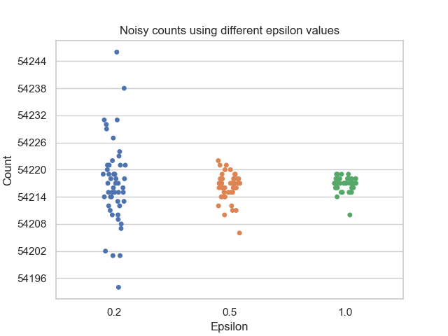
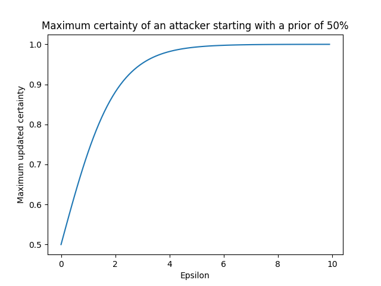

Privacy budget fundamentals#
This topic guide goes into more depth on the concept of privacy budgets that we discussed in working with privacy budgets tutorial. At a high level, a privacy budget associates one or more numeric privacy parameters with a privacy definition. Together, this information determines the privacy guarantees provided by each query, and by the Session as a whole.
In particular, a privacy budget determines how much randomization is added to the computation of a query. Choosing an appropriate budget for a given query is ultimately an exercise in balancing privacy and accuracy needs; we discuss this topic more below.
Tumult Analytics currently supports three distinct privacy definitions:
Pure differential privacy (“pure DP”, or simply “DP”), with its associated privacy parameter
epsilon. For data publication use cases, the value ofepsilonis often chosen to be lower than 5. Values below 1 are typically considered conservative. Pure DP is the original definition of differential privacy. To learn more, consult this blog post.Approximate differential privacy (“Approx DP”), with its associated privacy parameters
epsilonanddelta. Approximate DP is a relaxation of PureDP where mechanisms are allowed to fail to provide Pure DP guarantees with some (hopefully small) probability,``delta``. Delta can be thought of as that failure probability. The most common advice is to setdeltasignificantly smaller smaller than1/n, wherenis the number of people in your dataset. The relaxation of Pure DP enables new types of queries and can therefore be a powerful tool that still offers reasonable privacy protections when used correctly. To learn more, consult this blog post.Zero-concentrated differential privacy (“zCDP”), with its associated privacy parameter
rho. zCDP is a variant of differential privacy, which adjusts the way privacy loss is measured. To learn more, consult this: blog post.
Queries with higher values of epsilon, delta, and rho will produce results with less randomization that are therefore more accurate, whereas a lower budget yields more noisy results. Lower budgets are a stronger privacy guarantee, which highlights the trade-off between privacy and accuracy.
There is far more to learn about variations on differential privacy than we can explain in this guide; for simple use cases, pure DP is a good default choice.
Using privacy budgets in Tumult Analytics#
Tumult Analytics provides the PrivacyBudget
interface and concrete implementations for specifying privacy budgets,
depending on which privacy definition you wish to use:
PureDPBudget,
RhoZCDPBudget,
or ApproxDPBudget.
Recall from tutorials first steps and
working with privacy budgets that when you
initialize a Session, you must allocate a total privacy budget for it. Then,
each time you evaluate a query through the Session, you must specify how much
budget the query should use, which is then subtracted from the Session’s total.
For example, if you initialize a Session with PureDPBudget(epsilon=5),
and then evaluate a query with PureDPBudget(epsilon=2), then your
Session’s remaining budget will be PureDPBudget(epsilon=3).
There are a few additional constraints worth noting:
The type of budget your queries use must match the type of budget the Session was initialized with; for example, if you initialize your Session with a
PureDPBudget, then each query evaluated through that Session must also use aPureDPBudget.The individual budgets requested by all of your queries combined may not exceed the Session’s total budget. If you attempt to evaluate a query with a greater budget than your Session has remaining, the Session will raise an exception.
Choosing a budget: privacy vs. accuracy#
When you’re deciding how much privacy budget to use for a query, there is no single “right” choice. The choice of budget is ultimately a balance between accuracy and privacy, with lower budgets yielding noisier results and higher budgets yielding more accurate (and thus less private) results.
To better understand how epsilon impacts this trade-off, let’s look at a simple
example. We’ll use the example dataset from the
first steps tutorial, and we’ll perform a simple query to
count the number of rows in the dataset. The figure below plots the results of
running this count query using a PureDPBudget with 3 different epsilon
values, 50 times each:
{kind=link}

Notice how a smaller budget results in a larger spread of output values, while a larger budget results in a tighter cluster of values with less noise. The result of any individual query evaluated using a larger budget is more likely to resemble the true answer, and thus a larger budget provides less privacy protection than a smaller budget.
Understanding the total privacy guarantee of a Session#
The more budget you allocate to your Session, the more you will be able to use in each individual query (or you can ask a larger number of queries, each with a smaller budget). However, with a larger aggregate budget, the total privacy guarantee of the Session gets worse.
To understand why this is the case, let’s describe the attacker model more explicitly. Suppose you use a Session to generate answers to queries on a database, while enforcing a given privacy budget on a set of queries. An attacker is trying to determine whether a specific row (their target) is present in the input database. This attacker is powerful: we assume that they know all the rows in the database, except their target.
Suppose the attacker starts with a uniform prior suspicion about whether their target is in the database (i.e., an initial certainty of 50%, or 0.5). Next, they access the output of differentially private queries that someone previously published from the database. The choice of epsilon used for these queries determines how much the attacker’s suspicion can change. The below graph plots an attacker’s maximum updated certainty against various epsilon values:
{kind=link}

Recall that smaller epsilon values introduce more noise into the output of differentially private queries. Therefore, smaller epsilon values do not allow the attacker to significantly update their suspicion, whereas larger epsilons allow the attacker to determine with increasing certainty whether or not their target is in the database.
For an even more in-depth explanation of this topic, you can check out the following blog post.
The impact of data size#
Another factor that impacts the privacy/accuracy trade-off associated with a given budget is the size of each group on which aggregations are computed. In our first example above, even with the smallest budget of 0.2, all the noisy results were within about +/- 25 of the true count, which is a relative spread of about 0.05%. But what happens if we aggregate the data in smaller groups? Consider again our database of library members. Instead of counting all rows in the database, we’ll first group members by age and education level, and then count how many members fall in each group. The below graph plots the percentage error between the true and noisy counts for each group. The noisy counts were computed using an epsilon of 0.2.

Note the log scales for both x and y axes. For any given epsilon, queries evaluated on larger groups will tend to have less error than when evaluated on smaller groups. It is important to consider the typical sizes of groups of interest in your data when determining an appropriate privacy budget.